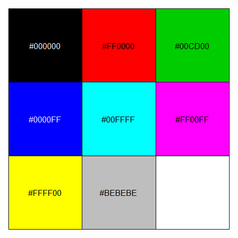
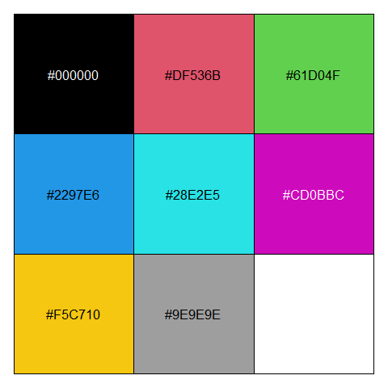
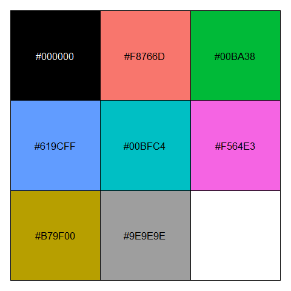
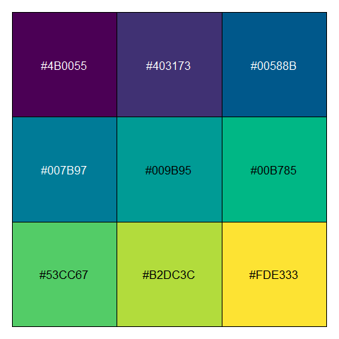
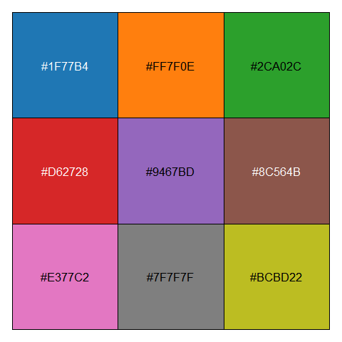
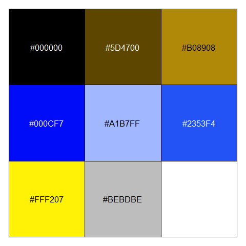
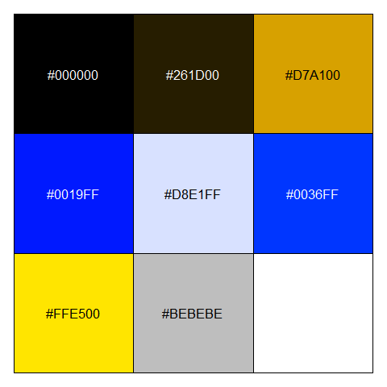
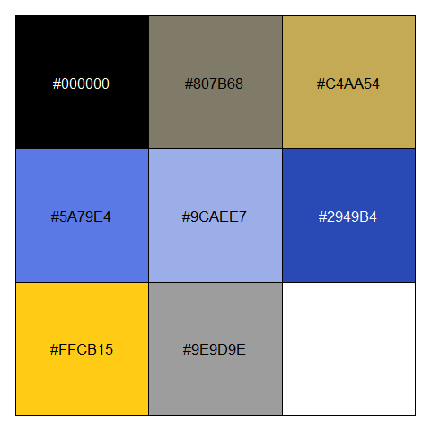
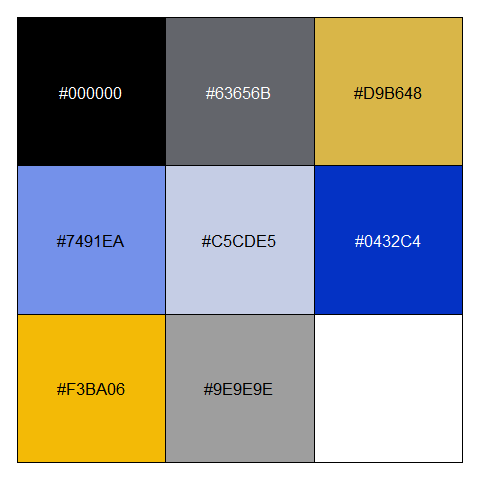

Introduction
R et Rstudio font peau neuve ces temps-ci !
- Pour l’integralite des changements a venir dans Rstudio https://rstudio.com/products/rstudio/download/preview-release-notes/
- Une sous-selection interessante et plus conviviale https://blog.rstudio.com/2020/03/17/rstudio-1-3-the-little-things/
- Pour installer la version beta de Rstudio https://rstudio.com/products/rstudio/download/preview/
- La nouvelle version de R est disponible sur le CRAN, avec la liste des changements https://cran.r-project.org/doc/manuals/r-devel/NEWS.html
Je developpe ci-dessous quelques-unes de ces evolutions.
Rstudio
Onglet Environnement
Si vous creez un dataframe avec un nom un peu long comme table_tres_importante = iris, vous pouvez maintenant, dans l’onglet Environnment, redimensionner la colonne qui contient le nom des tables pour voir leur nom complet ! Des annees qu’on attendait ca …
Auto-sauvegardes
Dans le menu Tools > Global Options > Code > Saving, rubrique Auto-save, vous pouvez choisir la politique “save and write changes”, je conseille de laisser un delai de deux secondes (sinon il faut etre assez rapide quand on veut utiliser l’auto-completion).
L’effet est immediat dans tout script que vous avez deja sauve au moins une fois sur votre disque : vous tapez quelque chose dans votre script, et deux secondes apres vous voyez disparaitre l’etoile qui suivait le nom du script et qui indiquait qu’il y avait des changements non sauves. Plus besoin de faire la moindre sauvegarde manuelle !
Correcteur d’orthographe temps reel
Pour activer ou desactiver cette fonctionnalite (avec le choix de la langue qui vous convient), aller dans Tools > Global Options > Spelling et cocher ou decocher la case “Use real time spellchecking”.
R 4.0.0
Ne pas installer cette version en prod !!!
Dans le cas d’un changement de version mineur (2.5.3 => 2.6.0) ou majeur (2.6.3 => 3.0.0) il est toujours conseille d’attendre la version de debuggage suivante (2.6.1 ou 3.0.1), surtout si vous faites de la prod sur la machine concernee.
stringsAsFactors = FALSE
Le comportement par defaut de R change : quand on lit un fichier ou qu’on cree un dataframe, il n’y a plus de conversion automatique des vecteurs de texte en facteurs, plus besoin d’empecher ca avec le celebrissime stringsAsFactors = FALSE ! Des dizaines d’annees qu’on attendait ca 😁
Les couleurs par defaut
Pour les details https://developer.r-project.org/Blog/public/2019/11/21/a-new-palette-for-r/index.html
En resume les couleurs par defaut ont change, entre autres pour qu’elles soient plus faciles a distinguer pour les daltoniens. Ci-dessous l’ancienne palette de R.3, celle de R.4, puis les palettes supplementaires de ggplot2, vidiris et du logiciel Tableau.
scales::show_col(palette.colors(n = 9, palette = "R3"))
scales::show_col(palette.colors(n = 9, palette = "R4"))
scales::show_col(palette.colors(n = 9, palette = "ggplot2"))
scales::show_col(hcl.colors(n = 9, palette = "viridis"))
scales::show_col(palette.colors(n = 9, palette = "Classic Tableau"))
Sur la premiere (resp. seconde) ligne, l’ancienne (resp. nouvelle) palette vue sans anomalie, puis avec deuteranomalie (faible sensibilite au vert) et enfin avec protanomalie (faible sensibilite au rouge).
print(" ----- normal ---------------------- deuteranopie --------------------- protanopie ----- ")
scales::show_col(palette.colors(n = 8, palette = "R3"))
scales::show_col(colorspace::deutan(palette.colors(n = 8, palette = "R3")))
scales::show_col(colorspace::protan(palette.colors(n = 8, palette = "R3")))
scales::show_col(palette.colors(n = 8, palette = "R4"))
scales::show_col(colorspace::deutan(palette.colors(n = 8, palette = "R4")))
scales::show_col(colorspace::protan(palette.colors(n = 8, palette = "R4")))[1] " ----- normal ---------------------- deuteranopie --------------------- protanopie ----- "
Personnalisation des messages d’erreur de vos controles
La fonction stopifnot declenche un message d’erreur personnalise a la premiere condition fausse :
x = 1
y = NA
try(stopifnot("le nombre 'x' doit etre positif"= x > 0,
"la variable 'y' ne doit pas etre manquante" = !is.na(y)),
outFile = stdout())Error : la variable 'y' ne doit pas etre manquante